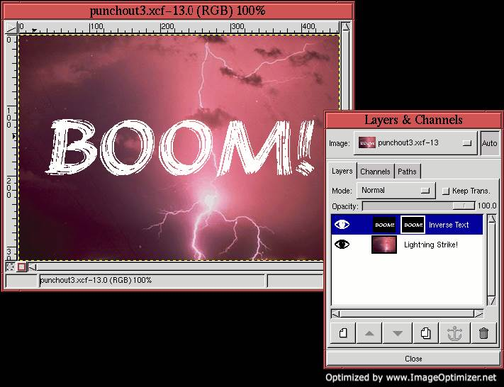

Next: 8.5 Rendering Project I:
Up: 8. Rendering Techniques
Previous: 8.3 The Emboss and
8.4 Shadows
A shadow is just a dark silhouette of an object, but with a somewhat
fuzzy edge to account for the diffraction of the illuminating light
source. Furthermore, depending on the
location of the source of light, a shadow is somewhat displaced with
respect to the object. You can construct very convincing shadows in
the GIMP. These are surprisingly useful rendering tools in image
manipulation, and this section explains how to make them.
To make a shadow for an image object you must have a selection of it.
The following describes the steps needed to create the selected
region's shadow:
- 1.
- Cut the selected region by typing C-x in the image window. This
places the selection into the default buffer.
- 2.
- Create a new transparent layer by clicking on the New Layer
button in the Layers dialog and choosing the Transparent option.
- 3.
- Paste the contents of the default buffer by typing C-v in the
image window. This places the paste into a floating selection.
Anchor the float to the new layer by clicking on the Anchor
button in the Layers dialog.
- 4.
- Duplicate the new layer by clicking on the Duplicate Layer
button in the Layers dialog. The duplicated layer is placed above the
original layer in the layer stack.
- 5.
- Name the duplicated layer Object and the original layer
Shadow.
- 6.
- Make the Shadow layer active by clicking on its thumbnail in the
Layers dialog, toggle on the Keep Trans. checkbox in the Layers
dialog, and use the Bucket Fill tool with its Threshold set to
255 to fill the image object with black or some other appropriate,
dark color.
- 7.
- Toggle off the Keep Trans. checkbox in the Layers dialog, use Gaussian Blur (IIR) found in the
Image:Filters/Blur menu to blur the Shadow layer, and use Offset from the Image:Image/Transforms
menu to shift it.
- 8.
- Use the Opacity slider in the Layers dialog to give the shadow an
appropriate degree of transparency.
This procedure is often referred to as making a drop shadow.
An example of creating a drop shadow is now presented using the preceding
recipe. Figure 8.16(a)
Figure 8.16:
A Daisy Selection
|
illustrates a photo of a daisy. Using techniques from
Chapters 3 and
4 a selection of the daisy is made and, as shown in
Figure 8.16(b), this is used to cut away the
daisy's background. (Note: the cut produces a transparent background
only if the original image layer has an alpha channel. For more on
alpha channels see Section 4.2.1.) The Layers
dialog in Figure 8.16(c) shows that the Daisy layer
has been duplicated and that the lower layer has been labeled Daisy
Silhouette.
The remaining steps in the creation of the shadow are now easy. The
Daisy Silhouette layer is filled with black using the Bucket
Fill tool (don't forget to set Threshold to 255 in the Bucket
Fill dialog). The blurring can be performed
with any of the blur functions from the Image:Filters/Blur menu
(but make sure that the Keep Trans. button in the Layers dialog is
toggled off before applying one). Here, Gaussian Blur (IIR) is
used with a radius of 20.8.1 This is followed by using Offset , which can be applied by typing C-S-o in the image window.
The offset parameters are set to 15 for both the X and Y components,
and the Wrap-Around radio button is toggled off. The result is shown
in Figure 8.17(a).
Figure 8.17:
Filling, Blurring, and Offsetting Creates the Shadow
|
Figure 8.17(b) and (c) show the dialogs for the
Gaussian Blur (IIR) and Offset filters used in this
example.
All that remains is to place the flower and shadow over an appropriate
background. This could be anything: a solid color, an image pattern,
or a photograph. Figure 8.18(a)
Figure 8.18:
The Final Drop Shadow
|
illustrates the daisy on a light blue background. The Layers dialog
in Figure 8.18(b) shows the placement of the blue
layer at the bottom of the image stack. This layer was created by
clicking on the New Layer button in the Layers dialog,
positioning it to the bottom of the layer stack, and using the Bucket Fill tool to give it the desired color.
By the way, the shadow produced using this technique can be made to
look more diffuse by making it more
transparent. Simply make the shadow layer active in the Layers dialog
and set the desired value of transparency using the Opacity slider.
A technique very similar to making drop shadows is that of making
punchouts. A drop
shadow creates the illusion of an image object floating above a
background. The punchout is also a shadow technique but gives the
illusion that part of the background has been cut away casting a
shadow on yet another background behind. This is the effect you would
see by holding a stencil slightly in front of a wall. The light
shining through the stencil casts a shadow that can be seen through
the stencil's hole, against the wall.
Like for drop shadows, to make a punchout for an image object you must
have a selection of it. The procedure for making a
punchout is similar
to that for making a drop shadow, but with a couple of twists. To
make a punchout in the shape of a selected image region follow these
steps:
- 1.
- Set the default colors by typing d in the image window.
- 2.
- Create a new layer by clicking on the New Layer button in the
Layers dialog, and select Foreground as the Layer Fill Type in the New Layer Options dialog. This fills the new layer with black.
- 3.
- Make sure that the new layer is active in the Layers dialog, and fill
the selected region with white using the Bucket Fill tool.
Label this layer Shadow.
- 4.
- Cancel the selection by typing C-S-a in the image window, and
create a layer mask for the Shadow layer by choosing Add Layer
Mask from the Layers menu.
- 5.
- Make the Shadow layer active by clicking on its thumbnail in the
Layers dialog, and copy it to the default buffer by typing C-c
in the image window.
- 6.
- Make the layer mask of the Shadow layer active by clicking on the
layer mask's thumbnail in the Layers dialog, paste the default
buffer's contents by typing C-v in the image window, and anchor
the resulting float to the layer mask by typing C-h in the image
window.
- 7.
- Make the Shadow layer active, blur it with Gaussian Blur
(IIR), and shift it with Offset.
This creates the punchout effect.
An example of making a punchout is now presented. The example
deviates slightly from the steps described in the preceding list.
Figure 8.19
Figure 8.19:
Lightning Strike!
|
shows an impressive flash of lightning across a deep purple sky. You
can just imagine the powerful clap of thunder that's coming. But in
case you can't, we're going to drive the message home by punching it
out of the photo.
We begin by setting the default colors by typing d and then
switching the background and foreground colors by typing x in
the image window. A new layer is created by opening the Layers dialog
and clicking on the New Layer button. The Background radio
button is selected from the New Layer Options dialog. This sets
the new layer to black. For this example the new layer is labeled
Inverse Text.
The Text tool is now invoked by clicking on its icon in the
Toolbox and then clicking in the image window. This brings up the
Text tool dialog shown in Figure 8.20(c).
Figure 8.20:
Placing Some Text
|
The Brushstroke font has been chosen with a height of 100 pixels, and,
because the goal of choosing this font is to get a rough punchout
effect, the Antialiasing option has been turned off, as shown in the
Text tool's Tool Options dialog
(Figure 8.20(d)). Clicking on the OK button in
the Text tool dialog places the text into a floating selection.
Because the Active Foreground Color is white, so is the newly
created text.
Cutting the floating selection with C-x and then pasting it back
with C-v centers the text before it is anchored into the layer
below by clicking on the Anchor button in the Layers dialog.
This makes a layer with white text on a black background.
Figure 8.20(a) shows the image window, and
Figure 8.20(b) shows the corresponding Layers
dialog at this stage in the example.
The procedure is almost complete. If we were making a drop shadow,
the new layer would be blurred and offset. However, for the punchout,
we first copy the Inverse Text layer into its own layer mask. This is
done in the following steps:
- 1.
- Make the Inverse Text layer active by clicking on its thumbnail in the
Layers dialog.
- 2.
- Copy the Inverse Text image contents to the default buffer by typing
C-c in the image window.
- 3.
- Create a layer mask by choosing Add Layer Mask from the Layers menu.
- 4.
- Paste the default buffer contents by typing C-v in the image
window.
- 5.
- Anchor the resulting floating selection to the layer mask by clicking
on the Anchor button in the Layers dialog.
The result is shown in Figure 8.21(a).
Figure 8.21:
Creating the Layer Mask
|  |
Figure 8.21(b) shows the corresponding Layers
dialog.
The final step is to blur and offset the text in the Inverse Text
layer. To do this, the Inverse Text layer is made active by clicking
on its thumbnail in the Layers dialog. This layer is then blurred
using the Gaussian Blur (IIR) filter with a radius of 8 and
shifted using Offset with values of 4 for both X and Y. The
result is shown in Figure 8.22(a).
Figure 8.22:
The Final Punchout
|
The blurred and offset inverted text now appears as a shadow seen
through a stencil punched out of the photo.
Figures 8.22(b) and (c) show the dialogs for
the Gaussian Blur (IIR) and Offset filters used in this
example.
Next: 8.5 Rendering Project I:
Up: 8. Rendering Techniques
Previous: 8.3 The Emboss and
©2000 Gimp-Savvy.com